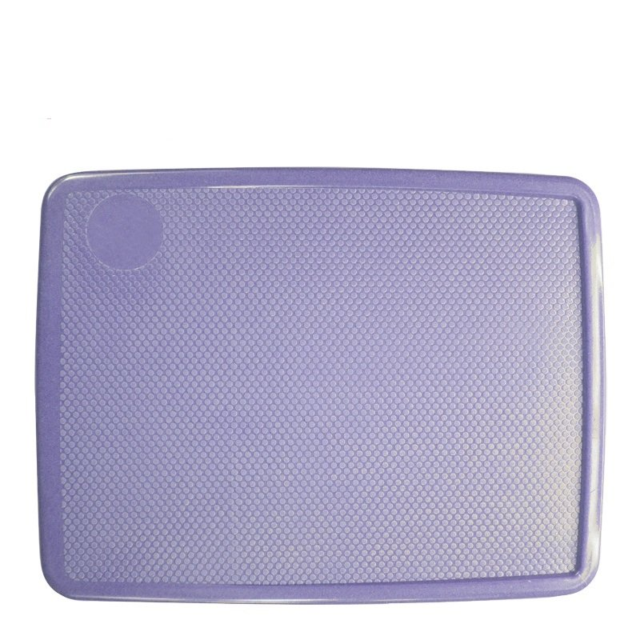

We are an OEM manufacturer first. Colour, logo, packaging and shape are all things we change for private-label brands, Amazon sellers and kitchenware distributors. Here is what can be customised and the realistic minimums and lead times.

Send a Pantone reference and we will match it across the sizes in your order. Colours are checked under controlled light so a reorder matches the first run. This is the basis of a colour-coded set for HACCP-style kitchens, and a way to make a retail range unmistakably yours.
We can mould your logo into the board during pressing, or print it on the surface. Moulding gives a permanent mark that cannot rub off; printing allows finer detail and multi-colour artwork. Which one suits depends on your design and the look you want on shelf.


Ship in a plain kraft box or a fully customised carton with your logo, artwork, barcode and care instructions. We can supply single-item boxes, inserts and master cartons laid out to fit your fulfilment and shelf plan.
Need a different footprint, a thicker board or a non-standard shape? We can develop custom sizes, thicknesses and shapes around a mould. This is a longer conversation than a colour change because tooling is involved — tell us what you have in mind and we will explain what is feasible and what it requires.

Sizes, Pantone colours, logo, packaging and target quantity. A spec sheet and photos go out from us.
Coloured samples in 2–3 weeks so you can check colour, feel and print before committing.
We make the order and welcome third-party inspection before shipment.
Send us your colour references, logo and packaging idea. We will reply with what is feasible, the MOQ and sample photos.